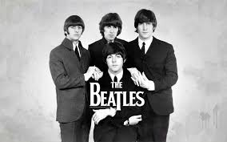
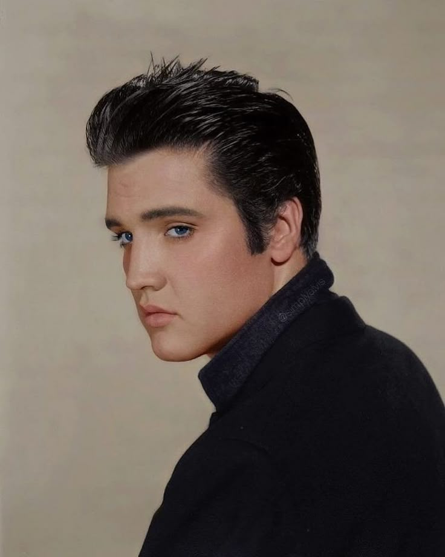
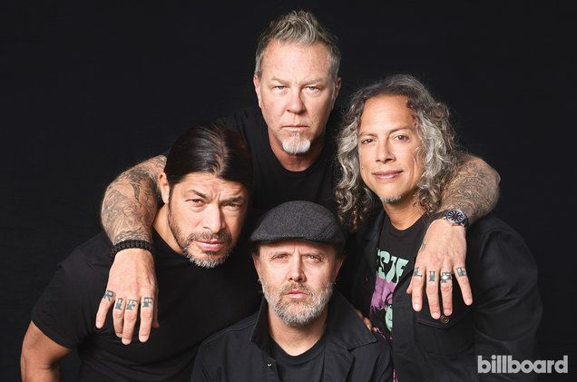

O que é e Onde Surgiu :
O estilo musical rock surgiu nos Estados Unidos na década de 50. Sua origem está relacionada ao momento em que alguns músicos passaram a tocar guitarra elétrica nas suas apresentações e os vocalistas a cantarem as músicas com vozes mais impactantes. O rock foi influenciado pelo gênero musical blues, mais especificamente pelo Rhythm and Blues (R&B), considerado a vertente negra do blues e a mais dançante. O rock também contou com influência da música country norte-americana. O então novo estilo musical foi propagado nos anos 1950 graças aos jovens, que rapidamente se encantaram com seu ritmo vibrante e cheio de energia. Outro ponto ligado à origem do rock são as letras das músicas que, na época, contestavam o sistema político e cultural dos Estados Unidos. Grande parte dos primeiros vocalistas relacionados ao nascimento do rock tinha voz grave e rouca, sendo vários deles negros. Os músicos também exalavam sensualidade nas suas apresentações, regadas ao ritmo da guitarra elétrica.
Principais Características do Rock:
A principal característica do rock e sua marca registrada é o som da guitarra elétrica, sempre potente. Algumas bandas contam com dois guitarristas, sendo um deles o responsável por fazer os solos que tanto agradam aos fãs. Compõem ainda uma banda de rock um baixista e um baterista. O vocalista de uma banda de rock é uma importante figura visual e comportamental, e seu estilo de voz varia conforme o gênero, mas, normalmente, é aguda, rouca, estridente ou gutural. Outra característica do rock é que ele está intimamente ligado ao visual. Os roqueiros usam sempre vestimentas e adereços como: roupas de couro, camisetas de banda, camisas xadrez, botas e acessórios (colares e pulseiras com tachas e spikes, bandanas, crucifixos etc.).
O Rock e Sua História com o Passar dos Anos
Década de 50 :
A década de 50 foi marcada pelo surgimento do rock, "tendo como principais estilos a mescla com o Rhythm and Blues e o rockabilly (rock com country). Entre alguns dos principais artistas esteve Billie Haley, o autor de uma das primeiras músicas do rock "Rock aroud the clock", de 1954.
Década de 60 :
Na década de 60 o rock já era conhecido no mundo todo. Nesse tempo, a Inglaterra tornou-se mais um berço de importantes bandas do gênero musical como The Beatles. Também foi nesse período que surgiram letras de músicas com significado, além dos primeiros festivais de rock.

Década de 70 :
O rock na década de 70 passou por diversas fases, e vários gêneros musicais dentro do rock nasceram, tais como: rock progressivo, heavy metal, hard rock, punk rock e outros.
Surgido no final da década de 60, mas consagrado mundialmente nos anos 70, Pink Floyd é a principal banda de rock progressivo da história. O grupo é mais lembrado pelo seu álbum The dark side of the moon, de 1973. Considerado uma obra-prima do rock, o disco fala de temas que até hoje são atuais, como tempo, dinheiro, loucura e morte.
Heavy metal
O heavy metal teve origem na década de 70. Esse subgênero é considerado o mais pesado do rock. Entre as características do metal, estão os solos de guitarra distorcidos, os vocais estridentes e a preocupação com o visual, sempre composto por roupas e acessórios pretos.
Principais Grupos de Sucesso:
- Black Sabbath
- Led Zeppelin
- Iron Maiden
- Motor head
Outro gênero musical dos anos de 1970 foi o glam rock ou glitter rock. Os músicos que se enquadravam nesse estilo tinham visual andrógino e usavam maquiagem. Conhecido como o “camaleão do rock”, David Bowie foi o principal representante do glam rock. Outros artistas ficaram famosos nesse cenário, tais como Alice Cooper, New York Dolls e T-Rex.
Hard rock e rock de arenaThe Who é outra banda de rock da Inglaterra que surgiu na década de 60, mas teve mais destaque nos anos 1970, especialmente pela sua ópera rock Tommy. A banda está ligada à criação do gênero hard rock. Uma das bandas mais famosas tendo como nome Queen foi um grupo de hard rock inglês que fez enorme sucesso mundialmente nos anos 1970. “Bohemian rhapsody”, lançada em 1975, é a música mais famosa da banda e é considerada uma ópera rock.
Punk rockO punk rock é um dos subgêneros do rock mais famosos da década de 70. Os músicos eram contra o que pregavam as autoridades políticas e tinham expressão artística contracultural. Dos Estados Unidos, os Ramones foram a banda mais representativa do punk rock, mas os ingleses The Clash e Sex Pistols também foram muito representativos.
Década de 80
O rock na década de 80 teve uma mistura de estilos, sendo o new wave, que teve sua origem na fusão do punk e do pop dançante, o primeiro deles. Também na década de 80 apareceram bandas de gothic rock, com temáticas mais sombrias, tais como The Cure, Joy Division, The Smiths, Sisters of Mercy etc.
Guns n' Roses foi a banda mais famosa do cénario de hard rock na década de 80." O grupo lançou seu primeiro disco, Appetite for destruction, em 1987 e dominou todas as paradas.
Surgimento da MTV
Em 1981, nos EUA, nasceu a Music Television (MTV), canal que veiculava videoclipes de bandas de rock à exaustão. A MTV ajudou a promover várias bandas de rock, especialmente de hard rock, tais como Bon Jovi, Motley Crue, Poison etc.
Década de 90
O rock dos anos 1990 deu lugar a novos gêneros musicais, como grunge, britpop, death e black metal e, ao final, new metal.
| Grunge | Britpop | Death | Black metal | New metal |
|---|---|---|---|---|
| Nirvana | Oasis | Death | Mayhen | Linkin Park |
| Pearl Jam | Blur | Obituary | Bathory | Korn |
Anos 2000 até a atualidade
O indie (rock independente) foi uma das vertentes do rock que tiveram mais sucesso a partir da década de 2000. Os artistas desse estilo defendiam a música underground e eram contra a cultura mainstream (comercial). Alguns exemplos são The Strokes e Artic Monkeys.
Outros estilos que tiveram destaque foram o punk pop, com Green Day e The Offspring, e o emo, com Evanescence e My Chemical Romance.
Algumas bandas ganharam fama nos anos 2000 e, até hoje, lotam estádios de todo o mundo. Entre elas, destacam-se Coldplay, U2, Foo Fighters e Red Hot Chilli Peppers.
Ìcones do Rock
Elvis Presley

Elvis Presley é considerado até hoje o maior ídolo do rock n’ roll mundial. Por isso, recebe a nomenclatura de Rei do Rock. Tudo isso devido a suas músicas e suas incríveis performances.
O astro dos anos 60 é o maior vendedor de discos de todos os tempos. Sua carreira foi preenchida por vários episódios marcantes e sua obra ainda se mantém viva até hoje, intacta e mundialmente conhecida.
As influências musicais de Elvis eram a música pop e country da época, as canções gospel cantadas na igreja e o R & B que ele absorveu na histórica Beale Street em Memphis.
Em 1956, o Rei do Rock começou uma carreira de relativo sucesso no cinema, estrelando o filme Love Me Tender. Convocado para o exército em 1958, retomou seu trabalho musical dois anos depois.
Elvis Presley não foi só mais um cantor no mundo. Ele foi um verdadeiro revolucionário da música popular americana. Suas performances inovadoras, o RockaBilly e a coragem de enfrentar a sociedade conservadora da época transformaram Elvis no Rei do Rock.
Infelizmente, o abuso de drogas com o passar dos anos levou o Rei do Rock a falecer repentinamente em seu apartamento, no dia 16 de agosto de 1977. Ele tinha 42 anos e a causa da morte foi um ataque cardíaco.
Metalica

O Metallica, um dos grupos que mais vendeu discos na história dos Estados Unidos, nasceu em 28 de outubro de 1981, quando o baterista Lars Ulrich e o guitarrista/vocalista James Hetfield se juntaram por meio de um anúncio de Ulrich no jornal LA Recycler. Logo, os dois recrutaram o amigo e colega de casa de Hetfield, Ron McGovney, para tocar baixo, e Dave Mustaine para tocar guitarra solo, e adotaram o nome Metallica após uma sugestão de Ron Quintana, amigo da cena metal da Bay Area. Sua ascensão seria relativamente rápida, impulsionada por pura dedicação, esforço e uma rara química musical. Depois de entrarem no circuito de abertura em Los Angeles (onde abriram para bandas como Saxon), gravaram sua primeira demo, No Life 'Til Leather . O circuito de troca de fitas enlouqueceu e, após shows repetidamente bem recebidos na Bay Area, o Metallica se viu se mudando para lá depois de convencer o baixista Cliff Burton a deixar sua banda Trauma e substituir McGovney.
Em 1991, o Metallica lançou seu álbum homônimo, mais conhecido pelos fãs como The Black Album . O novo produtor Bob Rock focou a banda em um som mais completo, com arranjos mais diretos. Foi direto para o número um em todo o mundo. Não saiu realmente por alguns anos, vendendo mais de 16 milhões de cópias em todo o mundo, gerando vários singles legítimos e ganhando vários prêmios da indústria, incluindo um Grammy, MTV e American Music Awards. "Enter Sandman" continua sendo um de seus hinos de assinatura, enquanto sua primeira incursão completa em algo mais baládico, "Nothing Else Matters", empatizou com as cordas do coração de milhões. A turnê que a acompanhou foi igualmente imensa, perto de 300 shows em três anos, levando a banda a limites que eles não sabiam que poderiam alcançar. Também contou com a famosa turnê conjunta em estádios com o Guns N' Roses. Ele produziu o primeiro álbum oficial ao vivo Live Shit: Binge & Purge , um box-set em formato de capa de viagem contendo todos os tipos de itens íntimos da turnê, de faixas a faxes.